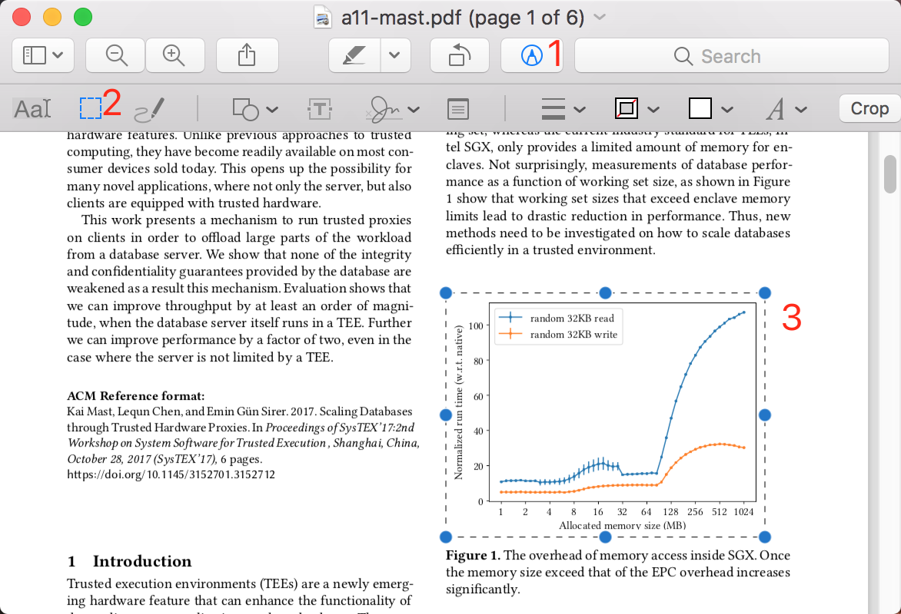
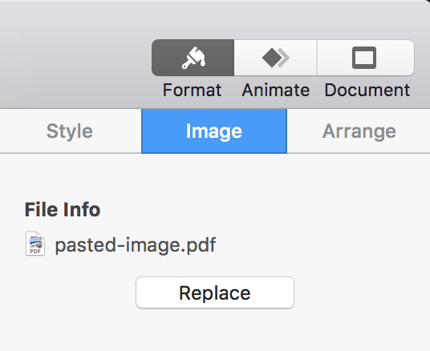
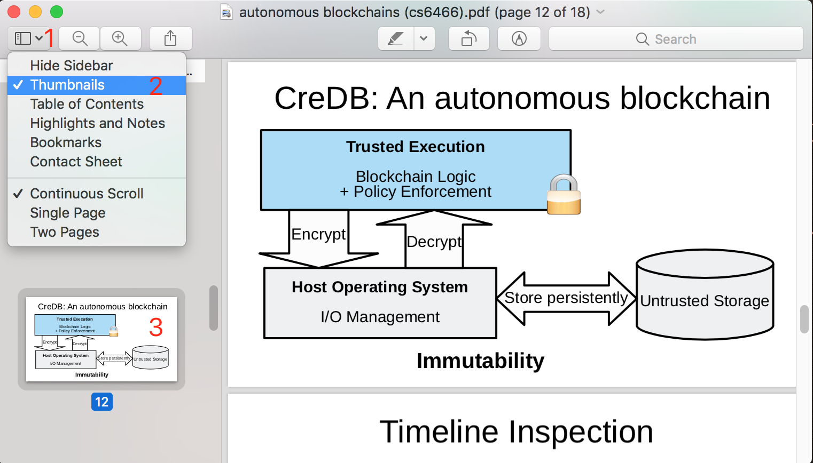
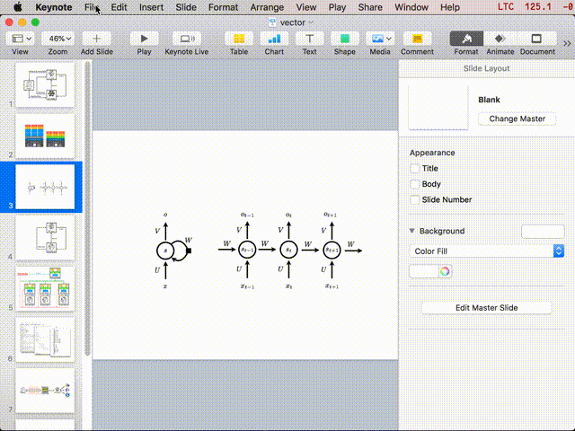
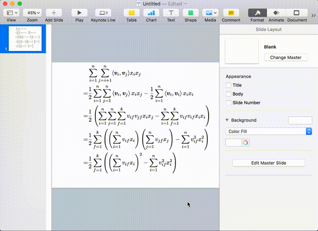
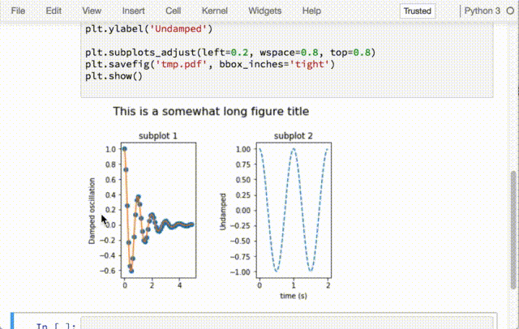
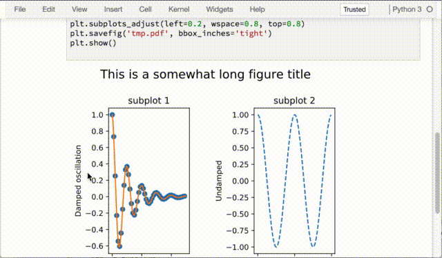

macOS 矢量作图小贴士
“放大放大再放大，每一根毛都看的清清楚楚。”
——[欢乐笔记本]内置病毒AIPC笔记本电脑
前些天我在写论文，自然免不了作图。我相信有很多读者像我一样有这样的强迫症：插图不是矢量图就浑身难受。插矢量图的好处都有啥？
- 放大看也不会模糊
- 可选中图片中的文字（似乎也没啥用）
- 看起来更像是自己画的而不是从网上截图
LaTeX 作矢量图的一大流派是 tikz，但是这个包对我来说还是太难了，总是学不会。而且我总是觉得，作图这种事情，就应该是在图形化界面里面拖拖点点更加直观清晰。之前我也听说有人用 InkScape、Ipe 等等软件的，但试了一下用起来总是不顺手。
可能是因为做幻灯片的机会比作图多得多吧，我发现我对 Keynote 非常习惯，于是理所当然地，我就顺带用 Keynote 来作图了。下面就介绍一下我在 macOS 下面作矢量图的经验，里面也包含了一部分用来做幻灯片的技巧。
矢量图格式
常见的矢量图格式以及在各种软件的兼容性可以总结成下面的这个表：
| 格式 | LaTeX | Keynote | 浏览器 |
|---|---|---|---|
| Yes | Yes | ||
| .eps | Yes | Yes | |
| .ps | Yes | Yes | |
| .svg | Yes |
既然要用 Keynote 作图，当然要把素材矢量图导入进去啦。对于 .pdf 和 .eps 文件，直接往 Keynote 里面拖就行了。这里介绍一下另外几个实用的小技巧。
用 Preview 复制 pdf 中的一部分
有时候我们想要引入一个 pdf 的一部分，比方说一幅图或者一个公式。最想当然的方法就是截图了，但截图产生的是位图，一拉伸就糊了。使用 Preview 可以非常方便地把矢量图原样取出来：

点击搜索栏左边的铅笔标签，可以多出来一个 Markup Toolbar，再点击其中的选取工具，然后选择你需要的部分，按 cmd+c 复制，切换到 Keynote 里面，按 cmd+v 粘贴就行了。

从 Keynote 的侧边栏可以看到，我们粘贴进来的图像是 pdf 格式的，而且可以通过放大缩小来验证，确实是矢量图。
另外，如果不想把选区插入 Keynote 而是想直接保存成图片，那么在按 cmd+c 复制选区，点击菜单栏 File / New from Clipboard 或者按 cmd+n，就会创建一个新的图片，按 cmd+s 保存成 pdf 文件就可以插入到 LaTeX 里面了。
用 Preview 复制一整页 pdf 幻灯片
这个技巧与上面的类似。在制作幻灯片的时候，有时我们想引用别人的整张幻灯片。使用 Preview 这也可以很轻松地做到：

点击最左边的视图图标，选中缩略图视角，在左侧会多出来幻灯片的缩略图，点击需要复制的幻灯片，按 cmd+c 复制，按 cmd+v 粘贴到 Keynote 里面就行了。
插入数学公式
Keynote 作图有个先天的功能性缺失：无法插入数学公式。不过既然可以插入 pdf，这就不是一个问题。MacTeX 套件在安装的时候会顺带安装一个非常好用的小工具，叫做 LaTeXiT。

写好 LaTeX 公式之后，按 LaTeX it!，等待图片生成好，往 Keynote 里面拖就行了，导出的也是 pdf 格式。

更厉害的是，还可以反向地拖回来：先在 Keynote 里面选中图片，然后在侧边栏把 pdf 图片的图标拖到 LaTeXiT 窗口里面，公式就回来了，可以方便地对其进行修改。
Keynote 导出矢量图
用 Keynote 画好之后，可以通过下面的方式导出成矢量图：点击 Keynote 菜单栏 File / Export to / PDF，选择最好的图像质量，然后导出。用 Preview 打开导出的 pdf 文件，然后和前面提到的技巧一样，先复制选区，然后从剪贴板新建图像，再保存成 pdf 就行了。
用 Inkscape 转换图像格式
有时候，我们从网上下载到的矢量图素材是 .svg 格式的，无法插入到 Keynote 里面。Inkscape 可以帮助我们把图片转成 .eps 格式。首先安装 Homebrew 和 Homebrew Cask，然后用下面的命令就可以一键安装 Inkscape：
1 | brew --cask install inkscape |
然后用 Inkscape 打开图片，再保存成 .eps 就行了。或者，也可以用下面的命令行一键转换：
1 | inkscape --export-eps=/path/to/image.eps /path/to/image.svg |
需要注意的是，因为一些bug导致从命令行调用 inkscape 的时候当前工作目录会发生改变，所以说一定要使用绝对路径。
Matplotlib 导出矢量图
在用 matplotlib 作图的时候，只要指定保存的图片的后缀为 .pdf 就能生成矢量图了。
1 | plt.savefig('tmp.pdf', bbox_inches='tight') |
在 Jupyter Notebook 上显示矢量图
相信大家都很熟悉在 Jupyter Notebook 上面用 Matplotlib 了，但是不知道大家看到画出来那一坨糊糊的东西会不会跟我一样浑身难受。实际上，只要多加一行配置，就能够让 Matplotlib 在 Jupyter Notebook 上面输出矢量图了：
1 | import matplotlib |
上面的最后一行指定了输出的格式是 svg，这样浏览器就能为你渲染矢量图了。下面上两张比较图：
默认输出 png，不用放大就可以看出糊糊一片了：

改成输出svg，放大放大再放大，每一根毛都看得清清楚楚：
